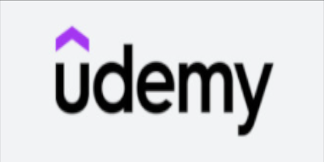
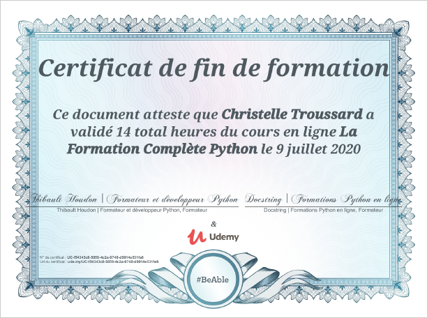
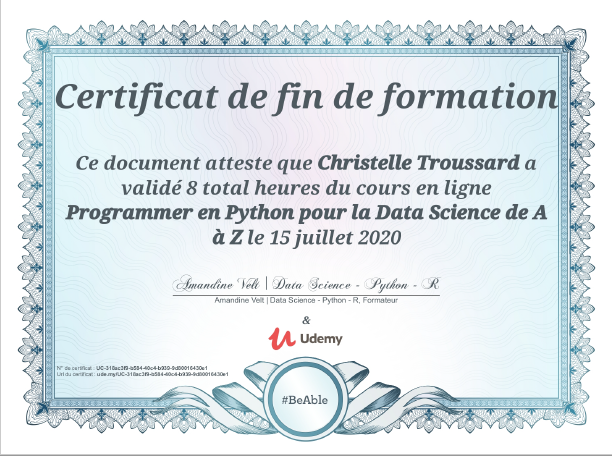
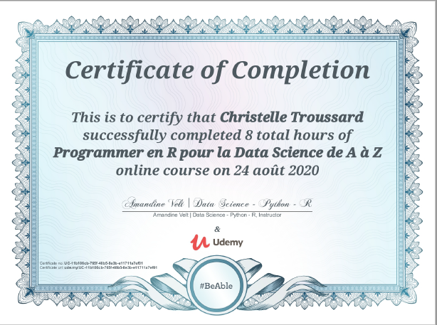

Cours UDEMY - Certificats UDEMY  Les certifications des cours suivis chez UDEMY et délivrés par UDEMY.  DATA - Formation complète Python  DATA - Programmer en python pour la data science de A à Z  DATA - Programmer en R pour la data science de A à Z